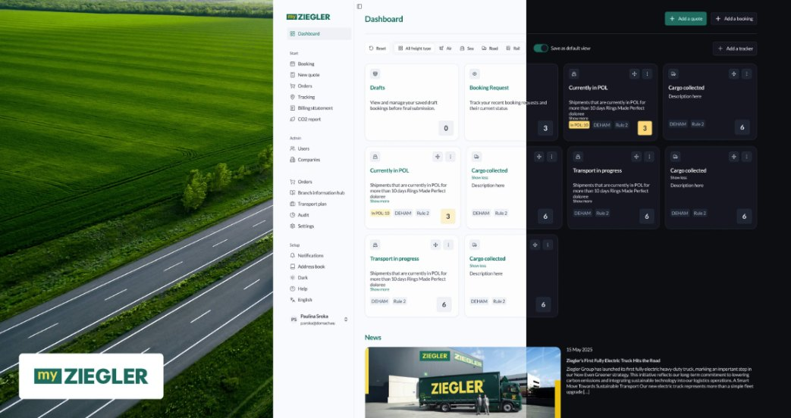
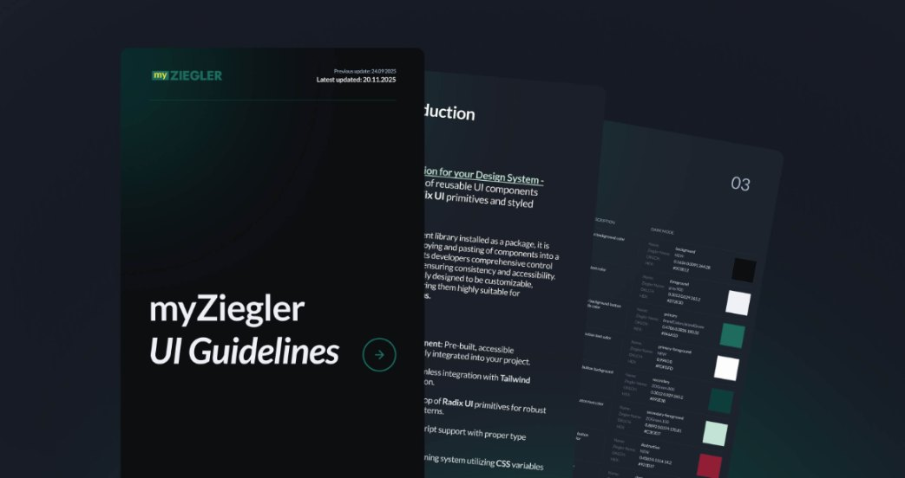
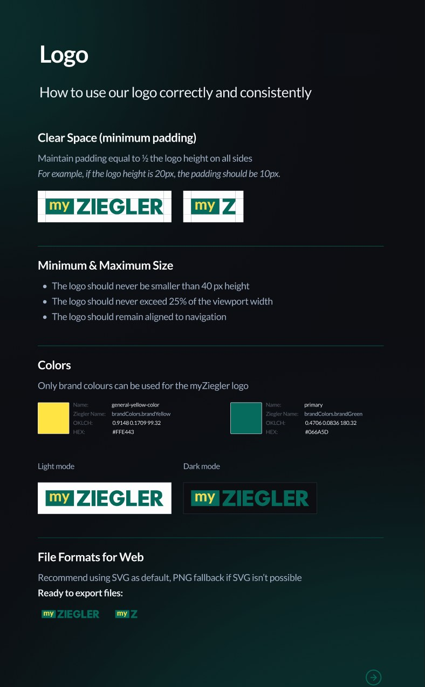
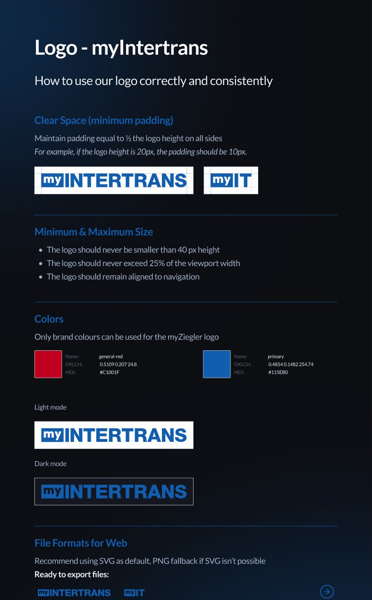
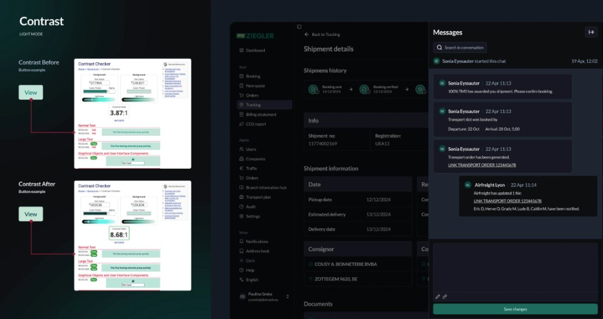
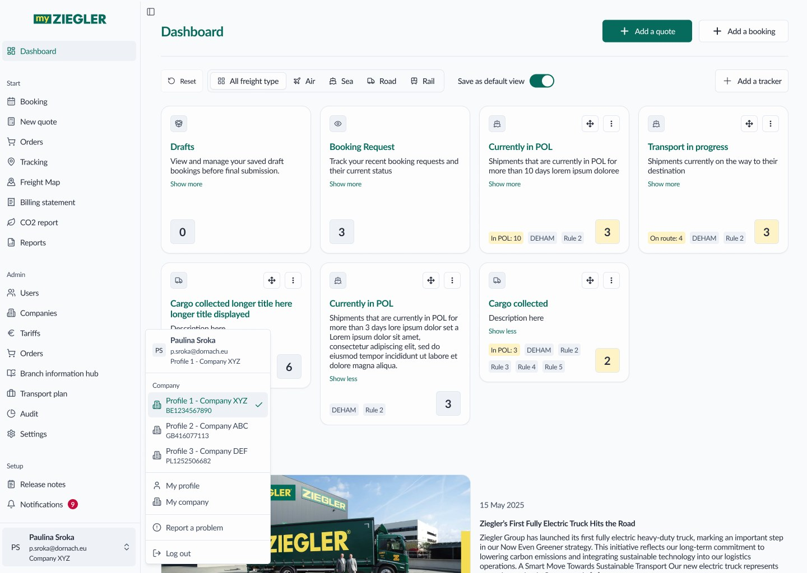
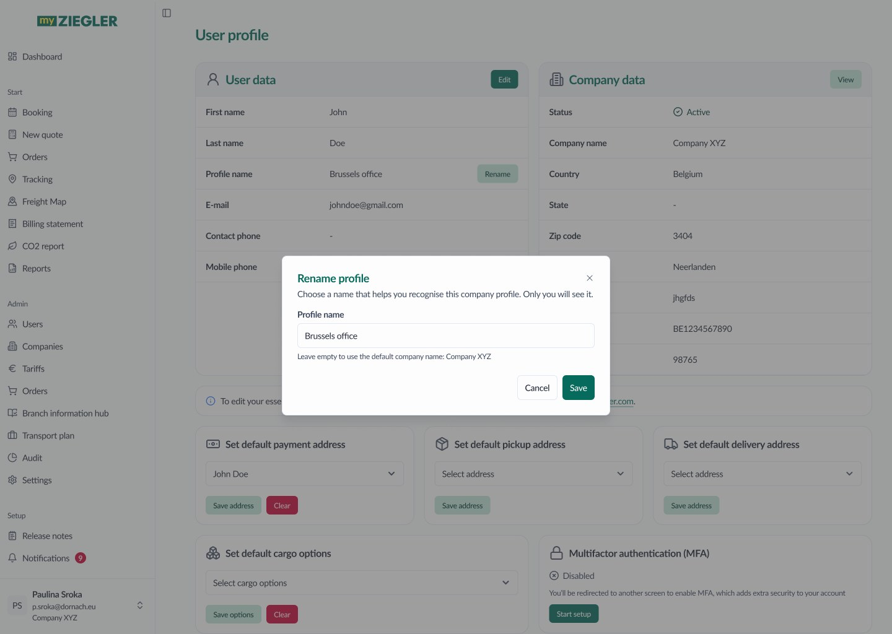
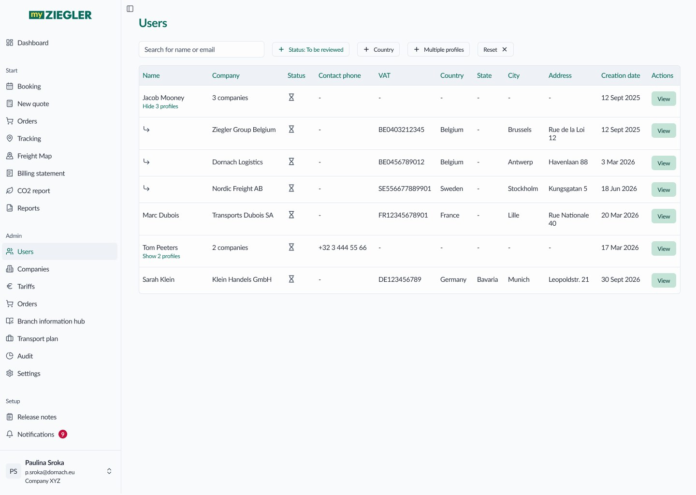
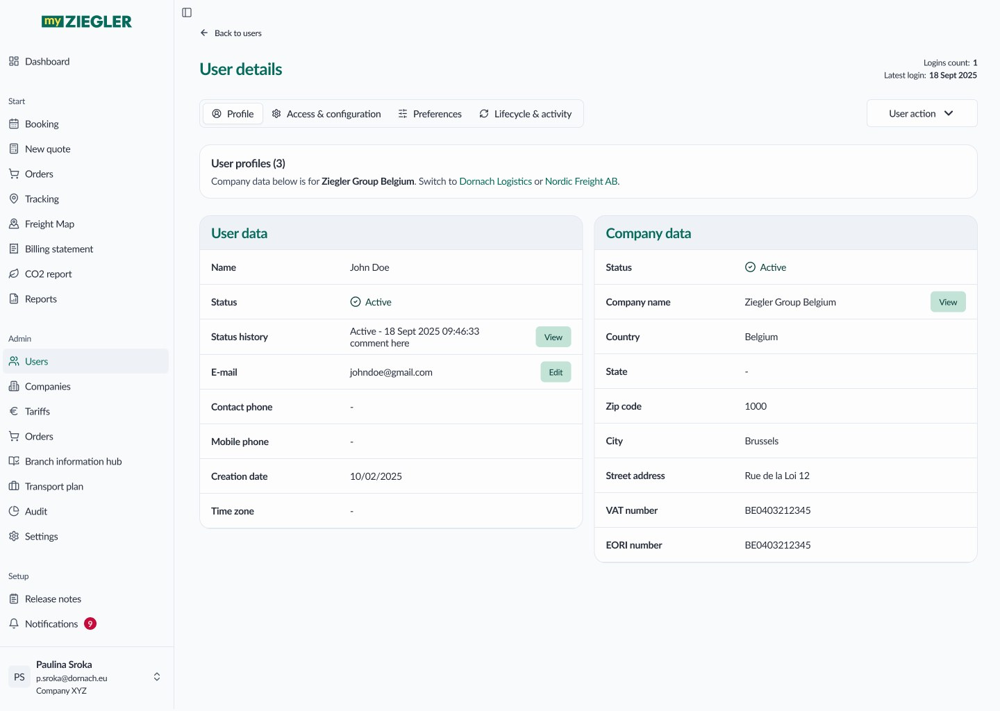
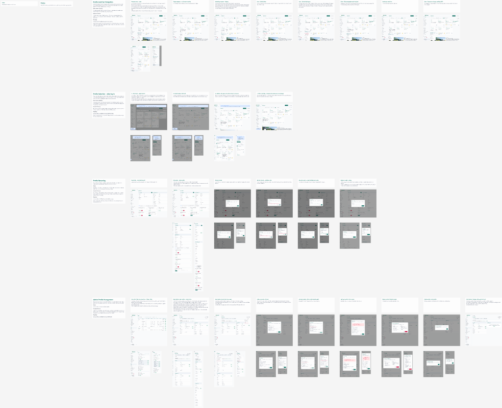

Making a powerful logistics platform easier to navigate, understand and use, with a shared design system underneath MyZiegler and myIntertrans.

MyZiegler is a logistics platform where users manage shipments, tracking, documentation, and daily operational workflows.
As the platform evolved, new features and workflows were added continuously, and consistency became harder to maintain even as functionality expanded.
The challenge was not creating new functionality, but making an already powerful platform easier to navigate, understand, and use efficiently.
Over the past year, I've focused on improving usability across the platform while building a scalable UI foundation for future growth.
Clearer paths through shipments, tracking and documents.
Shared components, spacing, type and patterns.
Consistent action patterns across the platform.
One structure across MyZiegler and myIntertrans.
Working with logistics software means working with large amounts of information, actions, and operational data. Rather than adding more interface elements, I focused on reducing complexity through better structure and hierarchy.
The goal was to help users find information faster and make decisions with greater confidence.
One of the most impactful initiatives was creating a shared style guide and reusable component system. It established common rules for components, layouts, spacing, typography, and interactions, creating a shared language between design and development.
Instead of solving the same problems repeatedly, teams could rely on reusable patterns and focus on improving the product experience.

One system underneath MyZiegler and myIntertrans, so users move between products without learning a new interface.
An example from the logo section of the UI guidelines: both products follow the same structure (clear space, size rules, colors, light and dark mode, export files), while each keeps its own brand colors.


As part of the system work, I also helped establish clearer accessibility standards and refined the platform's dark mode. Rather than simply inverting colors, the goal was an interface that stays comfortable, readable, and visually balanced during long working sessions.

A recent feature shows how I work with the team. A client's two companies had merged, and their people wanted to see the data of both in MyZiegler. A few other clients had the same need. Only a minority of users work for several companies, so the answer had to be an addition to the portal, not a redesign: every multi-profile element appears only when someone has two or more profiles.
Analysed the need and checked an earlier multi-profile idea against it.
A short proposal, confirmed with the team and the client before any design.
Switcher, renaming and admin views on desktop, tablet and mobile, built on the design system.
Checked against the Definition of Done, with open points discussed together.
The portal has no top header, so the switcher lives in the account menu at the bottom of the sidebar. The active company is always visible, and the menu lists every profile with its VAT number, because company names can look alike. Switching shows a spinner on the chosen row, the cards reload and the company line pulses once, so no success message is needed. People with a single company see no change at all.

Company names can be long or confusingly similar, so people can give each profile their own name, visible only to them. A new Profile name row on My profile opens a single field. Leaving it empty brings back the default company name, a name already in use is blocked inline, and the new name updates everywhere: user data, the account menu and the sidebar.

User data is shared by all of a person's profiles, while company data, access and preferences belong to one profile. The admin view keeps that split visible: one row per person, with “Show 3 profiles” opening a row per company, and a filter that shows only people with several companies.

The details page links a person's profiles in one sentence: “Company data below is for Ziegler Group Belgium. Switch to Dornach Logistics or Nordic Freight AB.” Switching changes only the Company data card, while User data stays the same for every profile. All actions, from adding a profile to blocking or deleting, sit in one User action menu.

Reuse first, don't reinvent the wheel.
My starting point was the patterns we already had. Most elements of this feature already existed in our design system: the account menu, list rows, tabs, dialogs and form fields. New components were added only where the feature truly needed them, and any update to the system was discussed with the team first.
Most building blocks came straight from the design system.
Changes to shared components were discussed with the team before design.
A change for a small group must not add steps or noise for everyone else.

One Figma page per task: notes on the left, the desktop flow in a row, tablet and mobile under each desktop screen. Built on design-system variables and components, with new elements where the feature needs them.
I check the work against the Definition of Done: a status, where to find it in Figma and an open question for every requirement. Partial and missing items become open points to discuss with the team.
Desktop, tablet and mobile screens for every state, with a note on each screen and row.
New and updated components, published in the MyZiegler library.
A clickable prototype with all flows and states.
Open the prototypeThe project is an ongoing effort focused on making complex logistics operations feel simpler and more intuitive. With a shared design system and improved information architecture, MyZiegler became more consistent, easier to navigate, and better prepared for future growth.
Most importantly, the work established a scalable foundation that allows new features and workflows to be added without increasing complexity for users.